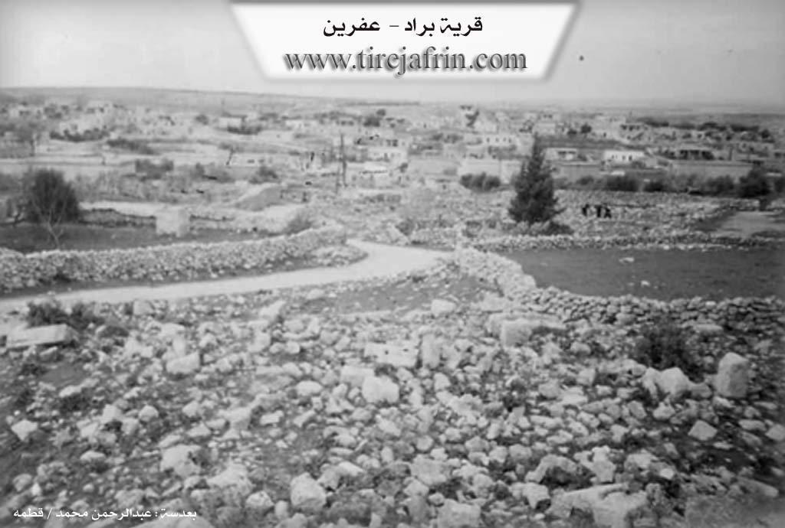

General Information
Nahiya (Subdistrict)
Efrîn
Also Known As
Barad, Beradê, Brad, براد
Families, Clans, etc.
Ehmed Silêman Osso, Elî Hecî Silêman, Luyî Opî Tane, Rêzan

Photos

Basic Information about Beradê
Source: Afrin 366
Foundation Date/Period: 700 years
Number of Caves: 3
Hills: Cebel Ehlam
Shrines: Tirba Mar Maron
Ruins: Hemamê Romanî
Summaries
I. Summary from TirejAfrin Site (English) of Beradê
Source: https://www.tirejafrin.com/site/kura%20afrin%20markaz-berada.htm
According to the book جبل الكرد (عفرين) دراسة جغرافية Çiyayê Kurmênc (Efrîn): A Geographical Study by د. محمد عبدو علي Dr. Mihemed Ebdo Elî:
Berad / 1408 inhabitants - 350 houses - 14km - 585m /
Abdullah Hajjar states that Berad means "mail carrier" or "place of running" in Syriac (Church of Saint Simeon Stylite, page 176). However, the rocky location of the village is entirely unsuitable for the sport of running. The book "In the Lands of Mar Maron - p. 21" mentioned, in addition to the above, that its original name in Greek is "Oniobparas," meaning: Spring of Berad, or the Cold Spring, or the Spring of the City of Berad. However, none of the village residents recall the existence of a "water spring" in the village site in ancient times.
As for Al-Khoury Barsoum, he says its origin in Syriac is: Barad, Barad, Qurr, Ablaq, from "coldness" due to its elevation, and it does not mean "mail carrier" or "place of running" as is said (p. 64). Regarding the name "Barid" (Mail), if this naming is correct, it is fundamentally a Kurdish-Persian word, derived from the docked-tail mule (Dv bir) which was designated for transporting mail to distinguish it and its function; the name was later altered to "Barid" (Yousef Sidawi - Syrian TV). In the Kurdish language, Berad means: shaking or trembling, and it also means striking, and minting coins (Kurdistan Dictionary). This last name aligns with the fact that the village was anciently a prosperous and important civil center in the Roman era and the early Byzantine era, and the capital of all the Çiyayê Seman districts; perhaps coins were also minted there, hence it was named so.
It is a large village located on the middle section of Çiyayê Lêlûn. It contains the remains of church walls, dilapidated buildings, massive hewn limestone blocks, columns, capitals, and lintels scattered around the village, in addition to tombs and wells carved into the rock, all dating back to the Roman and Byzantine eras. The Maronites believe that the tomb of the sect's founder, Mar Marûn, is located there.
According to the book عفرين .... نهرها وروابيها الخضراء Efrîn... Her River and Her Green Hills by the writer عبدالرحمن محمد Ebdulrehman Mihemed from the village of Qetme:
Berad is a village in Çiyayê Lêlûn and Seman, administratively belonging to the villages of the central district of Efrîn area, Aleppo governorate. It is a large village located on the western slopes of Çiyayê Lêlûn and Çiyayê Seman atop a rocky plateau and slope, with a valley below it starting from the west towards the east. The village houses are distributed across three areas: the northern side, the western side, and the southern side. The settlement of the area is ancient, evidenced by the remains of walls of churches, palaces, towers, capitals, a pilgrim guesthouse, tombs, lintels, a market, and cisterns carved into the rock.
It is bordered to the north by a rugged mountain chain of rocks and the village of Kîmar; to the south by a mountain chain, a rugged watercourse amidst a group of rocks, and the villages of Kefer Nabû and Burc Heyder. To the east, it is bordered by a rugged mountain chain with two watercourses and the village of Meyasê and Burc El-Qas. To the west, it is bordered by the western Çiyayê Seman chain, the Efrîn valley below, and the villages of Burc Ebdalo and Biyê.
The number of its houses is approximately 275. The age of the new and current village is 700 years. Its old dwellings are made of domes and stones mixed with mud and wood, while its modern dwellings are made of stones and reinforced concrete. An electricity network is available, and a paved road, Riya Kîmar-Basûtê-Efrîn (Kîmar-Basûtê-Efrîn road), connects it. It has a modern mosque on the western side and a primary school. The residents drink from pools and cisterns collected from rain in the winter season, and currently from artesian wells dug next to the houses. Its inhabitants work in the cultivation of cereals and olives, and the raising of sheep and cows.
As for the ancient village of Berad, it is an ancient city, and its ruins testify to this, as there are several ancient Roman churches and towers. These ruins are located in the southwest of the village. The most important of these Roman ruins are:
The Tawûs, dating to the 16th century AD.
The Roman tomb in the center of the village (2nd century AD).
The underground tomb (6th century AD).
An archaeological house dating to the 4th century AD.
The Dêra Bazilîk (Basilica Church), dating to the year 561 AD.
The Tomb of Saint Mar Marûn, from the year 410 AD.
The Dêra Juliyanos (Julianos Church), dating to the years 399–402 AD.
The Small Church, 7th century AD.
The Pilgrim Guesthouse.
The Monastery of the Monks (Dêra Rahîban).
The Birca Nasik (Hermit's Tower) and Stûna Nasik (Hermit's Column) located on the southwestern side of the village of Berad.
The tower and church of the Monastery of the Monks. All these ruins are spread across the southwest of the village.
Residential houses and a market near the tomb of Saint Mar Marûn.
Currently, the Ministry of Tourism and the Directorate General of Antiquities and Museums pay great attention to this site due to its great importance and archaeological value. The village of Berad is considered one of the largest archaeological villages in northern Syria and the city of Aleppo in terms of the antiquities found therein.
Village Mukhtar: Ehmed Ebdo Ebûd
Preparation and Execution:
Manager of Tîrêj Efrîn site: Ebdulrehman Hacî Osman
20/12/2013
Sources
Book: جبل الكرد (عفرين) دراسة جغرافية Çiyayê Kurmênc (Efrîn): A Geographical Study by د. محمد عبدو علي Dr. Mihemed Ebdo Elî.
Book: عفرين .... نهرها وروابيها الخضراء Efrîn... Her River and Her Green Hills by عبدالرحمن محمد Ebdulrehman Mihemed from the village of Qetme.
Studies of Navenda Tîrêj Soft / Ebdulrehman Hacî Osman.
II. Summary of Beradê from Afrin 366
Source: https://www.youtube.com/watch?v=Y8yadCA3hYw
The village of Beradê, located in the Şêrawa district on the slopes of Cebel Ehlam, stands as a settlement of immense historical depth within the Efrîn region. The hosts and local elders describe the village as being constructed primarily of stone, a style they refer to as "sexrî," with the existing residential houses estimated to be around 700 years old. However, the site itself is recognized as being much older, dating back thousands of years to the Roman and Byzantine eras. The elder residents recall a time when the village was rich with pomegranate trees, though today it is primarily known for fig trees, olives, and wheat cultivation.
The most significant historical landmark in Beradê is the Tirba Mar Maron, the tomb of Saint Maron. This site is identified as a holy place for Mesîhî people and has historically drawn significant visitors, including Lebanese leaders such as Sileman Ferençiye and Nebîl Berrî. The archaeological remains include a structure identified as a Hemamê Romanî which still exhibits clay pipes used for heating and water transport, demonstrating advanced ancient engineering. The village also features a large communal structure described as a place of gathering or circumambulation for the ancients. Additionally, the geography includes three specific caves that the villagers historically used as shelters to hide during times of war and danger.
The social history of Beradê is characterized by a mix of Kurmanc and Arab inhabitants, although the documentary notes that many residents are currently displaced. Specific families mentioned in the transcript include the household of Elî Hecî Silêman and the family of Rêzan. During a tour of the local cemetery, the host identifies the grave of Ehmed Silêman Osso, whose tombstone dates back to 1939. The narrative ends on a somber note, observing that recent earthquakes and conflicts have damaged the ancient stonework and left the surrounding areas dangerous due to potential landmines.
Transcriptions and Subtitles
| Source | Video | Subtitles | Transcript |
|---|---|---|---|
| Afrin 366 1 | Watch Video | Download SRT | View Transcript |
Foundation/Origin Information of Beradê
The houses are built upon much older historical layers.
Source: Afrin 366 Transcript
Possible Village Name Meaning of Beradê
Multiple theories: 1) Syriac: "mail carrier - or place of running". 2) Greek: "Onioparas" meaning: Brad Spring or Cold Spring. 3) Syriac: "Barad, cold, village, town, from coldness due to its elevation". 4) Kurdish: "tremor or shaking" and also "strike, and coin minting".
Source: TirejAfrin Site